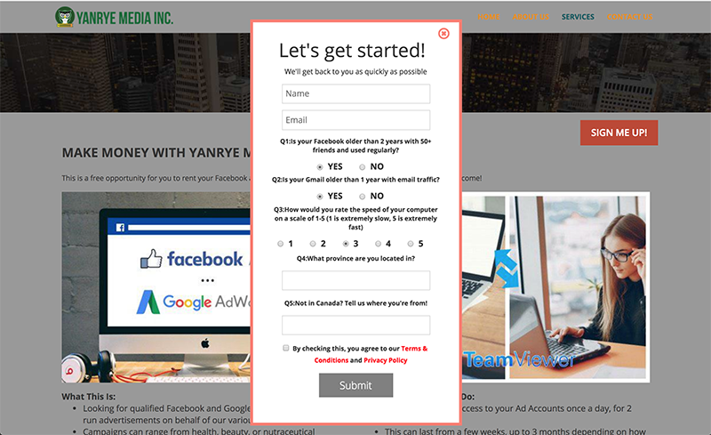
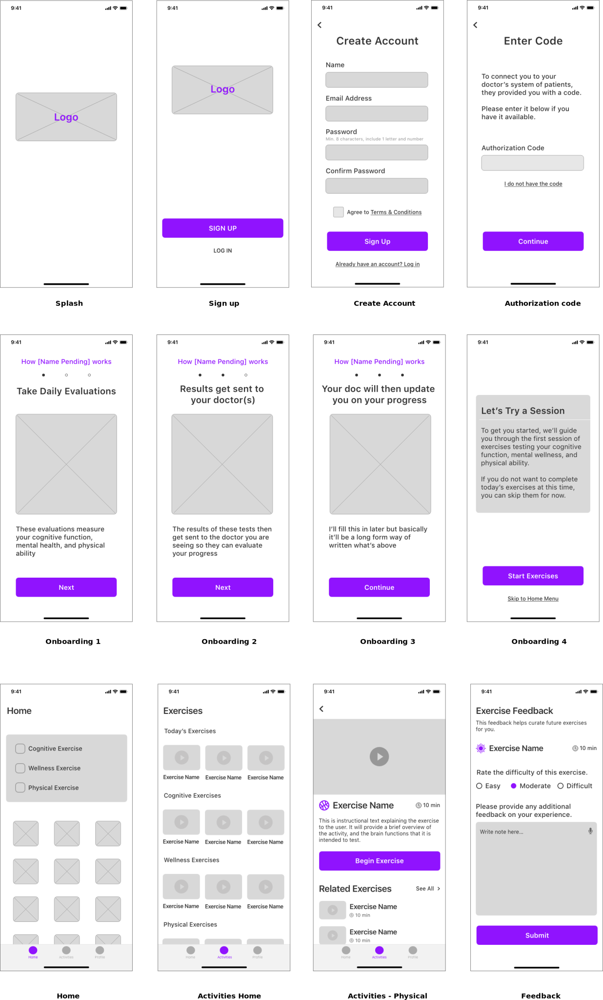
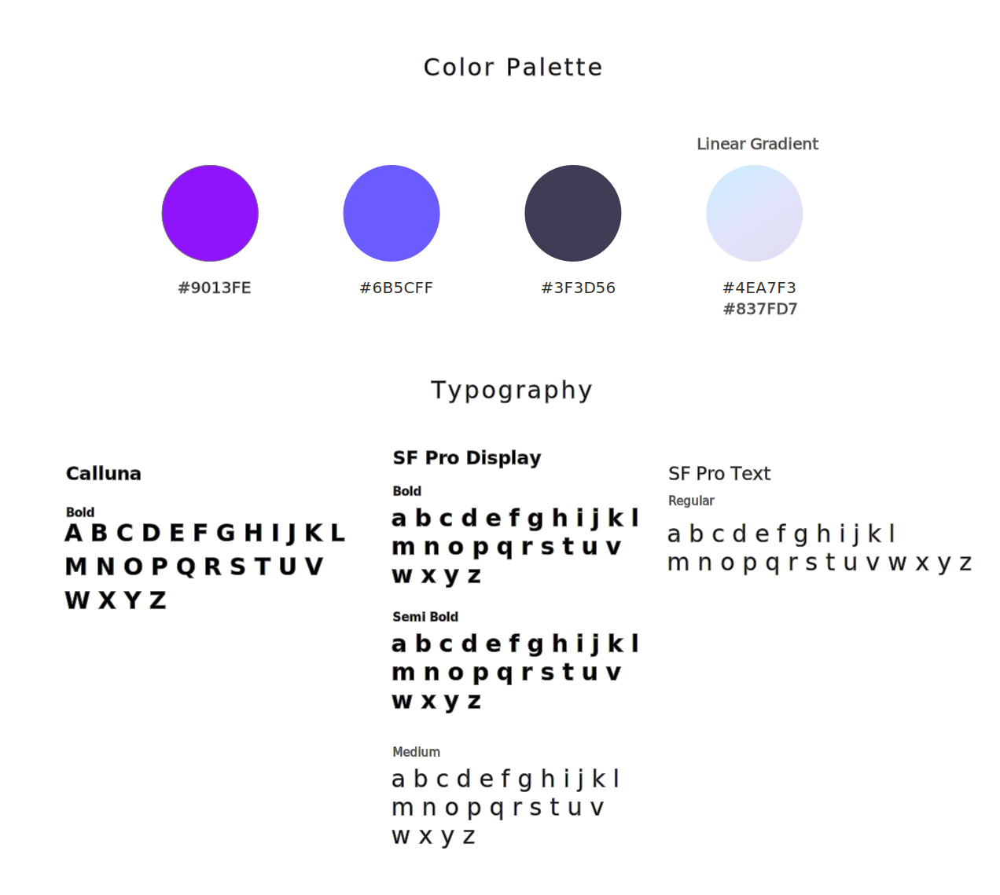

IcTheraphy
This project was a 4 weeks design challenge for Remote Design Jam hosted by San Francisco User Experience Designers (UXD) group. The prompt was an COVID-19 related problem. Each team decided on a problem space and solved it with design. Our team decided to create a mobile app that assists the recovery process and prevent any consequential damage for Post Intensive Care Syndrome patiants from COVID-19.

PROBLEM
Many survivors of severe COVID-19 cases are likely to suffer from Post-intensive Care Syndrome, which cause loss in cognitive function (up to 75% of ICU survivors) and mental health issues in the form of depression, anxiety, and PTSD (up to 62% of ICU survivors).
Occupational therapists and mental health professionals will be overwhelmed by the increase in patients as a result of the pandemic which will possibly cause less attention for individuals who are recovering.
SOLUTION
Create an app that curates daily exercises for the patient each day that evaluates their performance. The results are sent to the physician and that allows the physician to monitor the patient’s progress.
RESEARCH
To identify the users, we decided to research the demographic of severe COVID-19 patients and found this report. According to a recent New York Times report, of hospitalized COVID-19 patients… - 74.5% are 50 years old or older - 54.4% are male - 89.3% have an underlying medical condition such as hypertension, a chronic lung disease (e.g. asthma), or chronic metabolic disease (e.g. diabetes) Due to our time constraints, unfortunately we are unable to conduct user research.
USER PERSONA
We created a user persona to express and focus on the major needs and expectations of the user.
WIREFRAM
In our research of Post-Intensive Care Syndrome, key factors are cognitive function, mental wellness, and physical ability. We set the main feature to be those 3 categories of exercise. The app is connected with the physician’s system so the exercise evaluation will be sent to the doctor.
STYLE GUIDES
KEY FEATRUES
Data synchronized between doctor and patient
Authorization code provided by the doctor is required first time sign up. This code synchronizes between the doctor’s client management system and a client's app. This simple step is enabled to update the client's progress regularly for the doctor.

Guiding the feature of the application
These onboarding screens will appear when a user signs up for the first time to demonstrate the benefits and value that the user will get. In addition, educating a user how to use this app.
Activity feedback will send to doctor
The feedback screen will show up when an activity is done each time. The user marked the difficulty of the activity and provided notes for the physicians. This feedback helps curate activity for individual patients, also this result will synchronize client records that doctors own.


Simple navigation
“Home”, “Activities” and “Profile” of the main navigation are located at the bottom of the screen and all the pages are accessed from there. Daily activity list shows on the top of the home screen to remind users to conduct daily activities. Contact a care team, make an appointment, and pay a bill also can be accessed through the home screen. If patients have some concerts, they are easily accessed to a specialist.
MOCKUP

PROTOTYPE
PROJECT: IcTheraphy
YEAR: 2020
ROLE: UX/UI
Team: Seiko(self), Ryan Flynn(UX/UI), Nicole Hill (UX/UI), Jerrod Timmons(presenter)
BY: Sketch